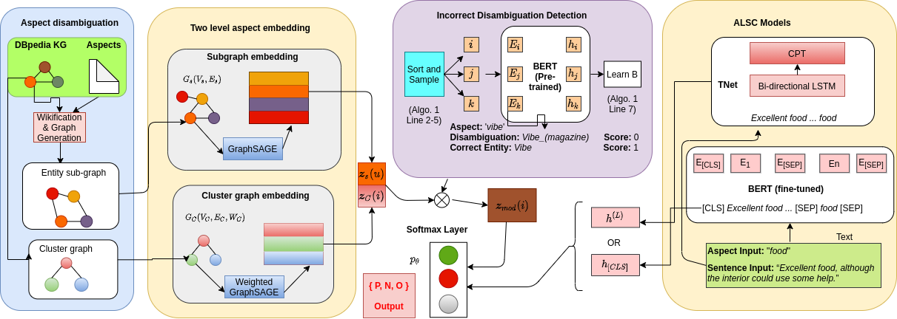
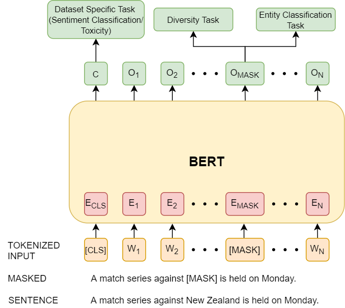

|
Research
My research interests mainly lie in the areas of NLP and Machine learning.
In partiuclar, my current works are focused on interpretability in neural NLP models across different applications such as Sentiment Analysis; controlled text generation and fairness in language models.
CV /
Google Scholar /
Semantic Scholar /
Github
|
|

|
AR-BERT: Aspect-relation enhanced Aspect-level Sentiment Classification with Multi-modal Explanations
Sk Mainul Islam, Sourangshu Bhattacharya
The Web Conference (WWW), 2022
Aspect level sentiment classification (ALSC) is a difficult problem with state-of-the-art models showing less than 80% macro-F1 score on benchmark datasets. Existing models do not incorporate infor- mation on aspect-aspect relations in knowledge graphs (KGs), e.g. DBpedia. Two main challenges stem from inaccurate disambigua- tion of aspects to KG entities, and the inability to learn aspect representations from the large KGs in joint training with ALSC models. We propose AR-BERT, a novel two-level global-local entity embedding scheme that allows efficient joint training of KG-based aspect embeddings and ALSC models. A novel incorrect disam- biguation detection technique addresses the problem of inaccuracy in aspect disambiguation. We also introduce the problem of deter- mining mode significance in multi-modal explanation generation, and propose a two step solution. The proposed methods show a consistent improvement of 2.5 − 4.1 percentage points, over the recent BERT-based baselines on benchmark datasets.
|
|

|
Fair Data Generation using Language Models with Hard Constraints
Sk Mainul Islam, Abhinav Nagpal, Balaji Ganesan, Pranay Kumar Lohia
CtrlGen Workshop at NeurIPS (NeurIPS-W), 2021
Natural language text generation has seen significant improvements with the advent
of pre-trained language models. Using such language models to predict personal
data entities, in place of redacted spans in text, could help generate synthetic
datasets. In order to address privacy and ethical concerns with such datasets, we
need to ensure that the masked entity predictions are also fair and controlled by
application specific constraints. We introduce new ways to inject hard constraints
and knowledge into the language models that address such concerns and also
improve performance on this task.
|
|
{kind=link}